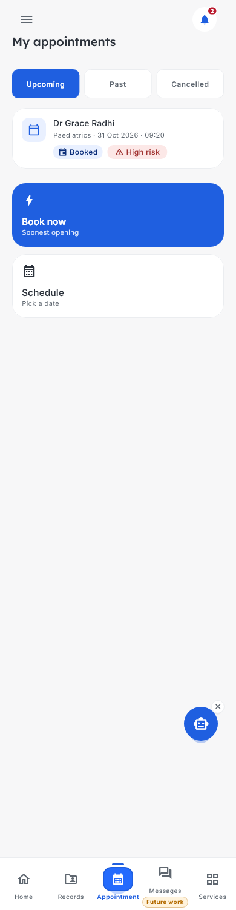
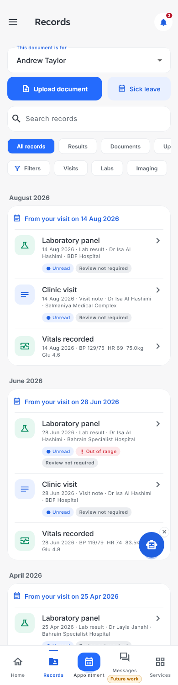
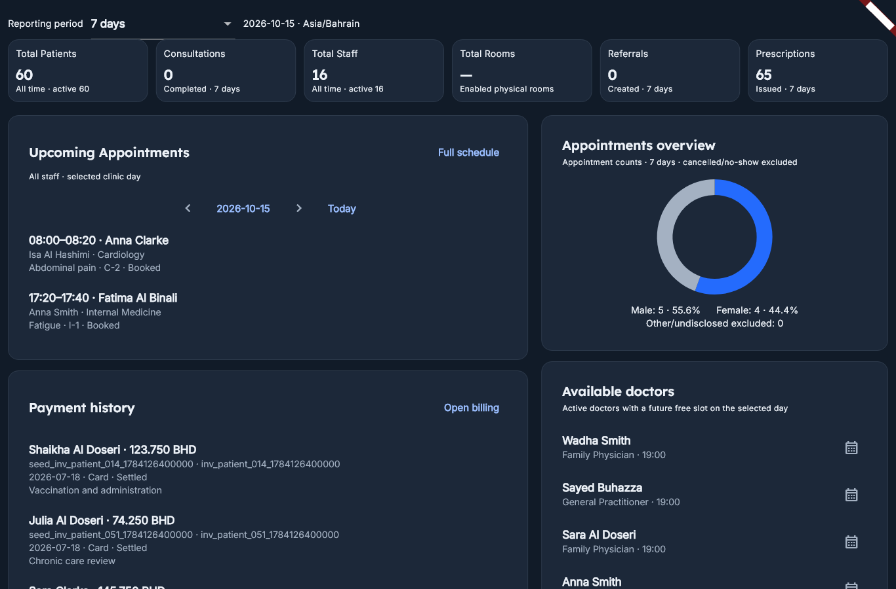

Plan your visit
Find a clinician, choose an available time, and review your appointment details.
Records, appointments, and everyday care — brought together in one simple experience for patients and clinics.


Scroll through real screens from MyHealth, then open the app and choose the Patient demo to try it yourself.



Ask how to use the app. Use sample information in messages.
The website chat is awaiting gateway setup. Open the MyHealth app
The current message and recent chat turns go to the MyHealth gateway. Chat history is saved in this browser.
Choose a workspace to see how myhealth supports each part of the care journey.
From your next appointment to your last report, find the information you need without jumping between separate tools.
 Actual app screen · synthetic data
Actual app screen · synthetic dataMove from the daily schedule to the patient chart, save consultation notes, and follow the work that needs your attention.
 Actual app screen · synthetic data
Actual app screen · synthetic dataBring people, departments, appointments, requests, and operational activity into one management workspace.

Actual app screen · synthetic data
Reports, prescriptions, vital signs, and visits belong to the same story. myhealth helps you see them together.
Bring your records togetherFollow your history in date order and open the original documents.
Know what has been reviewedSee the source of an uploaded record and whether a clinician has checked it.
Keep the next step closeFind appointment details, medicines, and permitted family information.
Let’s make that reportThe project aims to help patients understand uploaded PDF reports in everyday words. Explore a labelled example summary, or use report questions when the optional AI service is connected.
AI output is a draft and can miss details. It does not diagnose, prescribe, or replace professional care.
Find a clinician, choose an available time, and review your appointment details.
Open relevant records, review uploaded information, and record the consultation.
Follow medicines, available documents, and staff actions in the same experience.
A place for your full walkthrough: from the first sign-in to the patient, staff, and admin experiences.
Plays here only. It is not uploaded or saved to the website.
Meet the team bringing myhealth to life.
A University of Bahrain project, shaped by software engineering, backend development, and design.
Choose a name to get to know us.
Explore the patient, care team, and clinic experiences.
Take a look inside